Inicio › Bocinas y audio › Parlante Portatil JBL Go 4
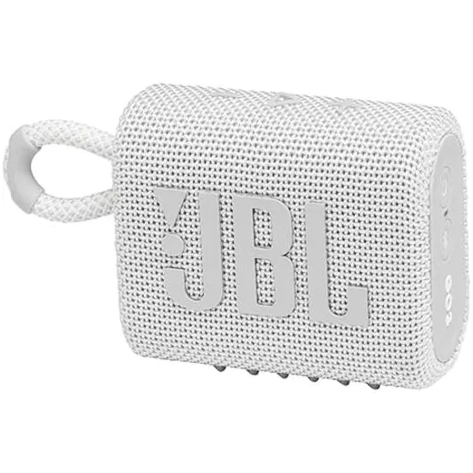
Precio en cada tienda
| Tienda | Precio | Antes | Disponibilidad | |
|---|---|---|---|---|
| Lady Lee | L 1,495 | Disponible | Ver en tienda › |
Precios referenciales tomados de cada tienda el 28 de noviembre de 2026. El precio válido es el que muestra la tienda al comprar.
Historial de precio
Lo seguimos desde el 1 de noviembre. Precio más bajo registrado: L 1,495 en Lady Lee (1 de noviembre), igual que hoy. El precio no ha cambiado en ese tiempo.
Características
| Aspecto | Detalle (Hecho del Producto) |
|---|
Descripción
El JBL Go 3 es un altavoz portátil ultra-compacto y de diseño atrevido, ideal para llevar tu música a todas partes. Ofrece el potente y rico sonido JBL Pro a pesar de su pequeño tamaño. Este modelo cuenta con la certificación de resistencia al agua y al polvo IP67, lo que lo hace perfecto para la playa, la piscina o cualquier aventura al aire libre. Su diseño moderno, envuelto en tela duradera de color blanco, incluye un práctico bucle integrado para que puedas colgarlo fácilmente.
Punto de Venta Único (PVU): La combinación de un sonido JBL Pro sorprendente con la resistencia al agua y al polvo IP67 lo convierte en el compañero musical perfecto para cualquier entorno.
Beneficio Clave: Su diseño ultra-portátil con bucle integrado y su batería de larga duración (especificar si se conoce: ej. 5 horas de reproducción ) permiten llevar la fiesta a do
Otras versiones del Parlante Portatil JBL Go 4
 AzulL 1,495En Lady Lee
AzulL 1,495En Lady Lee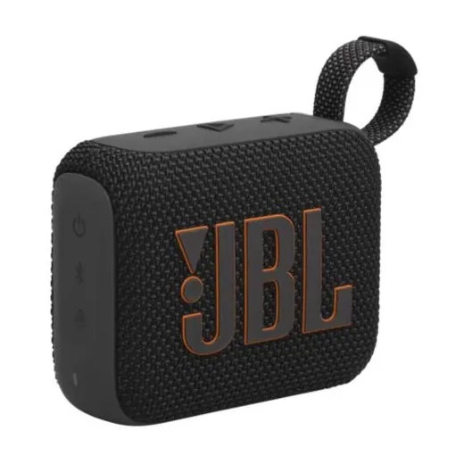
NegroL 1,495En Lady Lee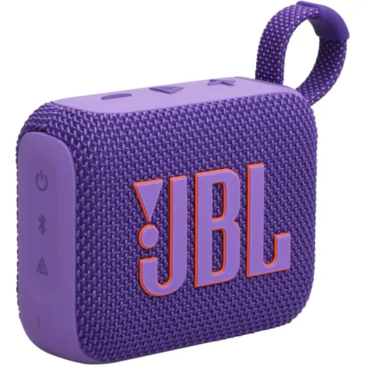
MoradoL 1,495En Lady Lee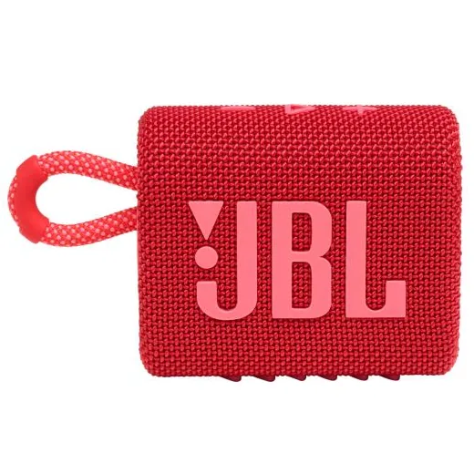
RojoL 1,495En Lady Lee
Ver todas las versiones del Parlante Portatil JBL Go 4
Otros bocinas y audio JBL
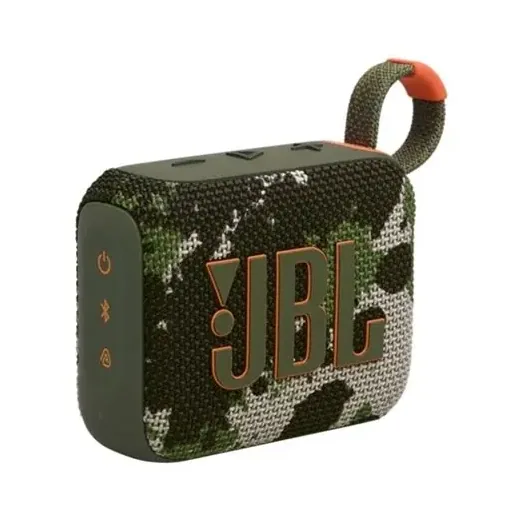
Parlante Portatil JBL Go 4 Verde SquadL 1,495En Lady Lee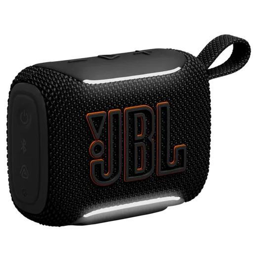
Bocina portátil JBL Go 5 Bluetooth en color negroL 1,495En Walmart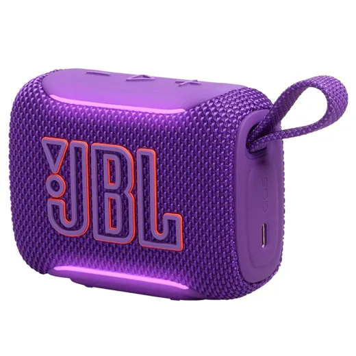
Bocina Jbl Go5 Bt 6.0 4.2 WL 1,495En Walmart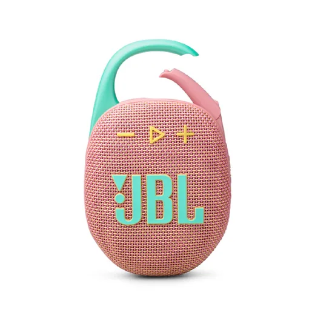
Parlante Portatil JBL Clip5 BT, 7W, PinkL 1,590En Diunsa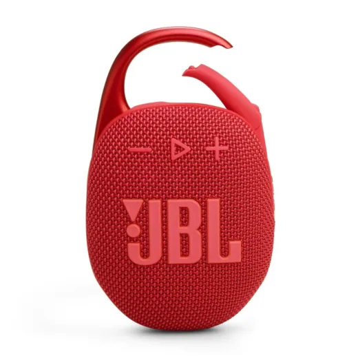
Parlante Portatil JBL Clip5 BT, 7W, RedL 1,590En Diunsa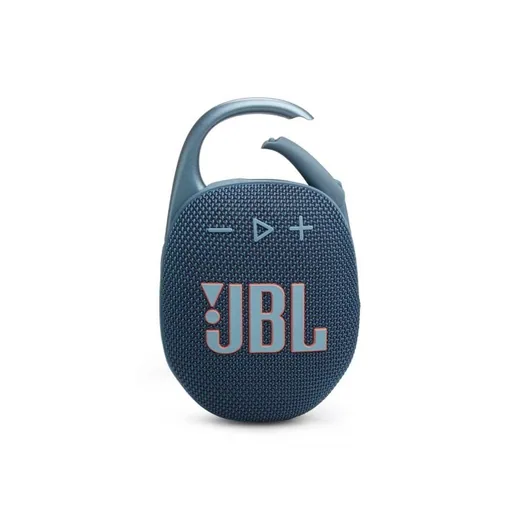
Parlante Portatil JBL Clip5 BT, 7W, IP67L 1,390En Diunsa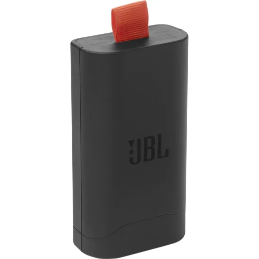
Batería Extraíble JBL 200AM de iones de litio 34Wh para Parlantes JBLL 1,695En Lady Lee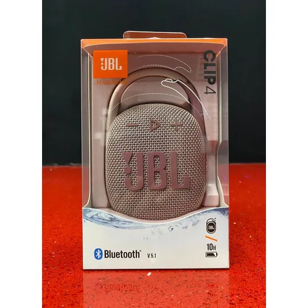
Parlante Bluetooth CLIP 4 Rosado JBLL 1,200En Game Station